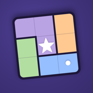
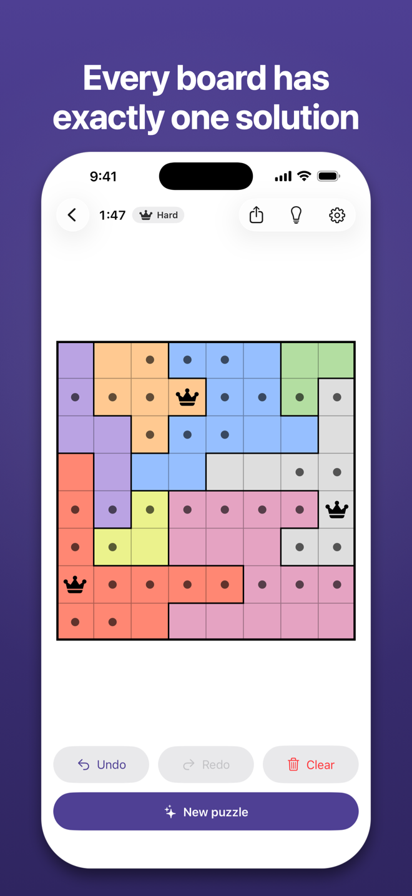
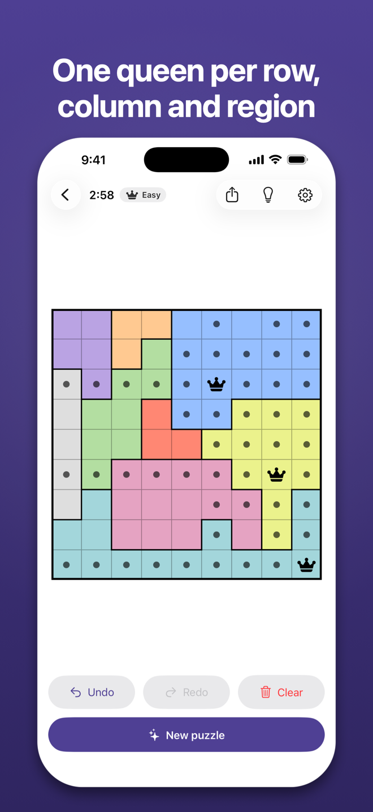
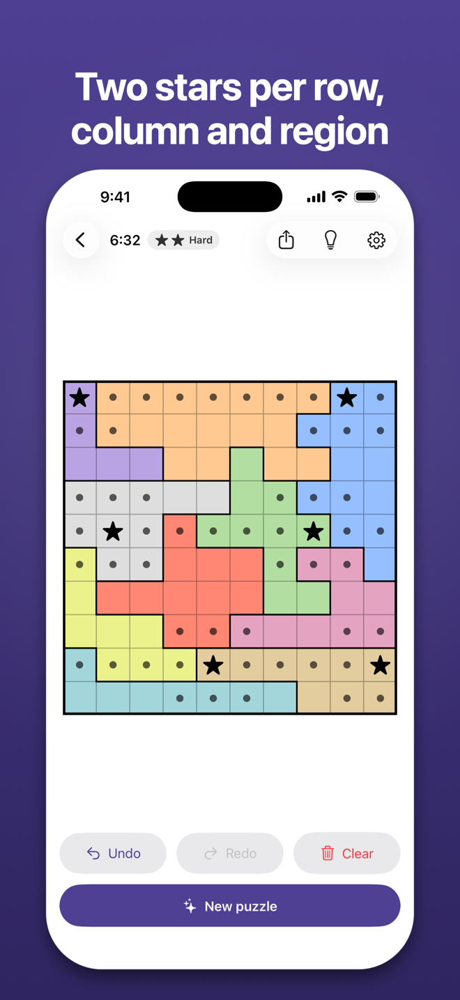
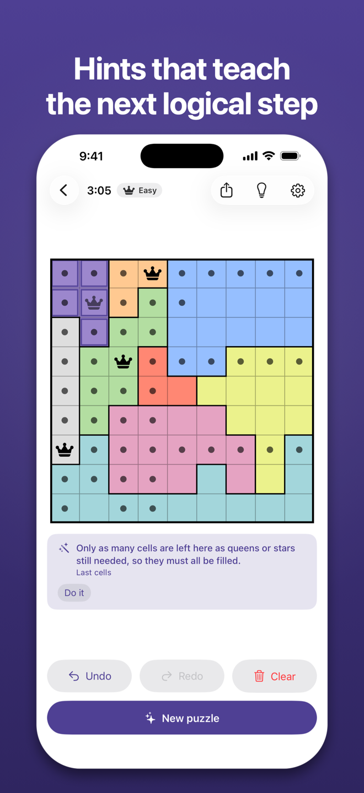
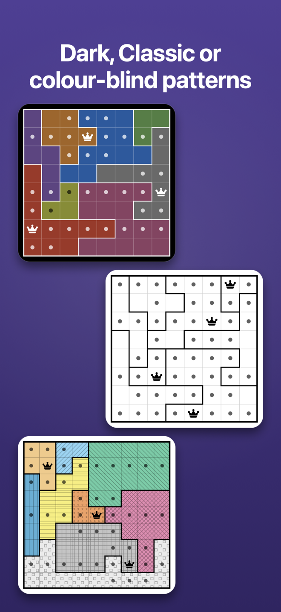
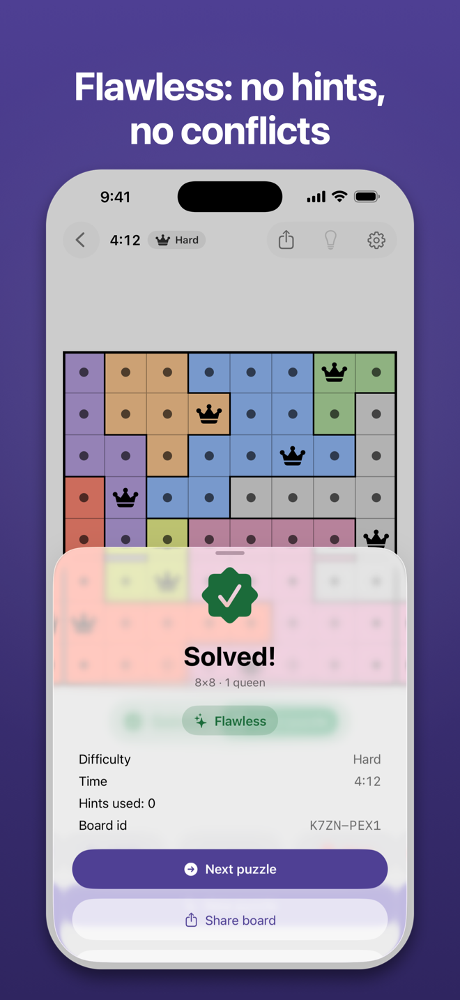
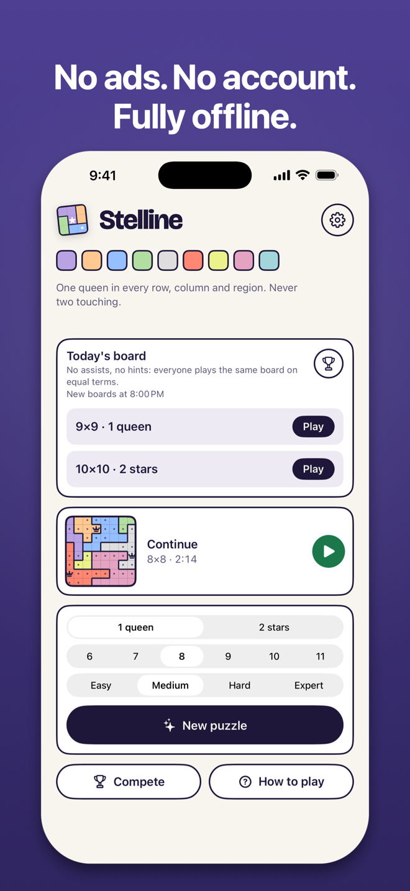

For iPhone · iOS 26 or later
Stelline
Star Battle-style logic puzzles, generated without end on your iPhone. Place one queen — or two stars — in every row, column and region, and never let two touch.
Every board is built on your device and verified to have exactly one solution. Easy to Hard boards are solved by the deduction engine without guessing; Expert is labelled honestly for the boards that need what-if reasoning. Boards are graded by the same engine that powers the hints. No ads, no account, no internet needed, and nothing about you is collected.
Coming to the App Store. English. iPhone only, portrait.
A look at the game







How it plays
- Pick a mode and a size. 1 queen boards go from 6×6 to 11×11; 2 stars boards from 9×9 to 11×11. Choose a difficulty and tap New puzzle.
- Tap a cell to cycle it — empty, dot, queen or star. Drag across cells to dot them all; start on one of your dots to erase instead. A placed queen dots its eight neighbours for you.
- Reason, never guess. Each row, column and region holds exactly one queen (or two stars), and no two may touch, not even diagonally. Auto-check stripes the ones that do.
- Stuck? Hint tells you how many queens and dots are misplaced — never where. Show me where then highlights the row, column or region behind the next logical step, shows the cells, and can apply the step for you.
What makes it Stelline
Unlimited boards
Every puzzle is generated on your iPhone, usually instantly from a small bank kept ready in the background. There is no pack to buy and no daily limit.
Exactly one solution
Each board is checked by an exact solver before you see it. You will never be left with a coin flip between two answers.
Honest difficulty
A deduction engine with 17 human techniques solves every board first and grades it Easy, Medium, Hard or Expert from the reasoning it needed.
Hints that teach
Counts first, locations only if you ask. The step-by-step ladder names the technique and highlights the unit it works on.
Made for thinking
Auto-dots around a placed queen, auto-check for touching pieces, undo and redo, a timer you can hide, and autosave with Continue.
Your look
Queen or star glyphs, dot or X marks, a Classic black-and-white theme, colour-blind mode with distinct region colours, light and dark appearance.
Accessible
Full VoiceOver labels and actions on every cell, Dynamic Type on all controls, Reduce Motion respected.
Private by design
No network access, no account, no analytics, no ads, no third-party code. Nothing you do leaves your phone. Read the privacy policy.
Requirements
Stelline runs on iPhone with iOS 26 or later, in portrait. It is in English. It does not need an internet connection at any point.
Questions or problems? See the support page.